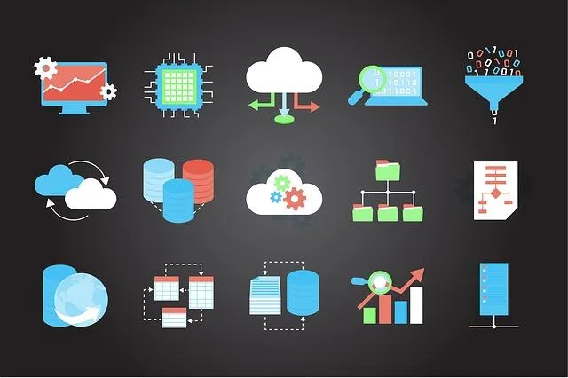

We believe security software like Kicksecure needs to remain Open Source and independent. Would you help sustain and grow the project? Learn more about our 14 year success story and maybe DONATE!
Shell
scriptingDocumentationHost
FirewallPrevious page:
Shell scriptingIndex page:
DocumentationNext page: Host
Firewall
Essential Host Security

This page is targeted at advanced users who wish to improve the general security of their host operating system to become even more secure.
Kicksecure comes with many security features. Kicksecure is Security Hardened by default and also provides extensive Documentation including a System Hardening Checklist. The more you know, the safer you can be.
Host Security Essentials
It is recommended to first read relevant Computer Security Education entries concerning host security, such as:
- Core Dumps
- Firmware Security and Updates
- Hardware Threat Minimization
- Host Firewall Essentials
- Host Operating System Selection
- MAC Address
- Malware and Firmware Trojans
- Open Source Hardware
- Out-of-band Management Technology
- Router and Local Area Network Security
- System Configuration and Access
- TCP and ICMP Timestamps
Power Saving Considerations
 Warning: Upon system suspend / standby, Full Disk
Encryption (FDE) keys are still kept in RAM.
Warning: Upon system suspend / standby, Full Disk
Encryption (FDE) keys are still kept in RAM.
Users at high risk or traveling should avoid leaving a system in the suspend.
Instead, the recommended power mode to use is hibernation.
Hibernation should also be avoided until further notice.
https://forums.kicksecure.com/t/support-for-hibernation/1349
This will lock all system partitions to a safe state, though there is a small trade-off in startup time.
On GNU/Linux hosts, standby will not always result in having LUKS keys retained in memory. Some experimental projects [1] and custom setups with systemd+scripting are able to erase the keys before system suspend to avoid mistakes.
Following a system standby period, the network fingerprint for Tor on the Kicksecure is identical to a standard Tor instance on the host that has gone through the same procedure. There are some old connections that go stale and need renewal, but nothing is seen by a network adversary because time leak identifiers have been stripped out of Tor's protocol / OpenSSL, and TCP Timestamps are gone.
To reconnect to Tor following a suspend / standby / hibernation period:
- Kicksecure: Manual time adjustment is required or the VM can simply be powered off and then powered on again. [2]
- Kicksecure for Qubes: After resume, time adjustment is automatic and seamless. [3] [4]
See Also
Footnotes
- ↑ https://github.com/jonasmalacofilho/ubuntu-luks-suspend
- ↑ This step will be unnecessary once hypervisor-specific post resume hooks are used, because guest clocks will be seamlessly updated upon power state changes from the host.
- ↑
 Kicksecure/sdwdate
Kicksecure/sdwdate - ↑ Kicksecure/sdwdate
Categories: Documentation